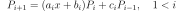
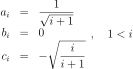
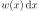
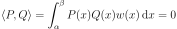
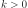

HermiteFactory¶
(Source code, png, hires.png, pdf)
{kind=link}
{kind=link}
-
class
HermiteFactory(*args)¶ Hermite specific orthonormal univariate polynomial family.
For the
Normaldistribution.- Available constructor:
- HermiteFactory()
Notes
Any sequence of orthogonal polynomials has a recurrence formula relating any three consecutive polynomials as follows:

The recurrence coefficients for the Hermite polynomials come analytically and read:

Examples
>>> import openturns as ot >>> polynomial_factory = ot.HermiteFactory() >>> for i in range(3): ... print(polynomial_factory.build(i)) 1 X -0.707107 + 0.707107 * X^2
Methods
build(degree)Build the  -th order orthogonal univariate polynomial.
-th order orthogonal univariate polynomial.buildCoefficients(degree)Build the -th order orthogonal univariate polynomial coefficients.buildRecurrenceCoefficientsCollection(degree)Build the recurrence coefficients. getClassName()Accessor to the object’s name. getId()Accessor to the object’s id. getMeasure()Accessor to the associated probability measure. getName()Accessor to the object’s name. getNodesAndWeights(n)Build the -th order quadrature scheme.getRecurrenceCoefficients(n)Accessor to the recurrence coefficients of the -th order.getRoots(n)Accessor to the recurrence coefficients of the -th order.getShadowedId()Accessor to the object’s shadowed id. getVisibility()Accessor to the object’s visibility state. hasName()Test if the object is named. hasVisibleName()Test if the object has a distinguishable name. setName(name)Accessor to the object’s name. setShadowedId(id)Accessor to the object’s shadowed id. setVisibility(visible)Accessor to the object’s visibility state. -
__init__(*args)¶ Initialize self. See help(type(self)) for accurate signature.
-
build(degree)¶ Build the
-th order orthogonal univariate polynomial.Parameters: - k : int,

Polynomial order.
Returns: - polynomial :
OrthogonalUniVariatePolynomial Requested orthogonal univariate polynomial.
Examples
>>> import openturns as ot >>> polynomial_factory = ot.HermiteFactory() >>> print(polynomial_factory.build(2)) -0.707107 + 0.707107 * X^2
- k : int,
-
buildCoefficients(degree)¶ Build the
-th order orthogonal univariate polynomial coefficients.Parameters: - k : int,
Polynomial order.
Returns: - coefficients :
Point Coefficients of the requested orthogonal univariate polynomial.
Examples
>>> import openturns as ot >>> polynomial_factory = ot.HermiteFactory() >>> print(polynomial_factory.buildCoefficients(2)) [-0.707107,0,0.707107]
- k : int,
-
buildRecurrenceCoefficientsCollection(degree)¶ Build the recurrence coefficients.
Build the recurrence coefficients of the orthogonal univariate polynomial family up to the
-th order.Parameters: - k : int,
Polynomial order.
Returns: - recurrence_coefficients : list of
Point All the tecurrence coefficients up to the requested order.
Examples
>>> import openturns as ot >>> polynomial_factory = ot.HermiteFactory() >>> print(polynomial_factory.buildRecurrenceCoefficientsCollection(2)) [[1,0,0],[0.707107,0,-0.707107]]
- k : int,
-
getClassName()¶ Accessor to the object’s name.
Returns: - class_name : str
The object class name (object.__class__.__name__).
-
getId()¶ Accessor to the object’s id.
Returns: - id : int
Internal unique identifier.
-
getMeasure()¶ Accessor to the associated probability measure.
Returns: - measure :
Distribution The associated probability measure (according to which the polynomials are orthogonal).
Notes
Two polynomials P and Q are orthogonal with respect to the probability measure  if and only if their dot product:

where
 and
and
 .
.Examples
>>> import openturns as ot >>> polynomial_factory = ot.HermiteFactory() >>> print(polynomial_factory.getMeasure()) Normal(mu = 0, sigma = 1)
- measure :
-
getName()¶ Accessor to the object’s name.
Returns: - name : str
The name of the object.
-
getNodesAndWeights(n)¶ Build the
-th order quadrature scheme.Associated with the orthogonal univariate polynomials family.
Parameters: - k : int,

Polynomial order.
Returns: Examples
>>> import openturns as ot >>> polynomial_factory = ot.HermiteFactory() >>> nodes, weights = polynomial_factory.getNodesAndWeights(3) >>> print(nodes) [-1.73205,...,1.73205] >>> print(weights) [0.166667,0.666667,0.166667]
- k : int,
-
getRecurrenceCoefficients(n)¶ Accessor to the recurrence coefficients of the
-th order.Of the orthogonal univariate polynomial.
Parameters: - k : int,
Polynomial order.
Returns: - recurrence_coefficients :
Point The recurrence coefficients of the
-th order orthogonal
univariate polynomial.
Notes
Any sequence of orthogonal polynomials has a recurrence formula relating any three consecutive polynomials as follows:

Examples
>>> import openturns as ot >>> polynomial_factory = ot.HermiteFactory() >>> print(polynomial_factory.getRecurrenceCoefficients(3)) [0.5,0,-0.866025]
- k : int,
-
getRoots(n)¶ Accessor to the recurrence coefficients of the
-th order.Of the orthogonal univariate polynomial.
Parameters: - k : int, 
Polynomial order.
Returns: - roots :
Point The roots of the
-th order orthogonal univariate polynomial.
Examples
>>> import openturns as ot >>> polynomial_factory = ot.HermiteFactory() >>> print(polynomial_factory.getRoots(3)) [-1.73205,...,1.73205]
-
getShadowedId()¶ Accessor to the object’s shadowed id.
Returns: - id : int
Internal unique identifier.
-
getVisibility()¶ Accessor to the object’s visibility state.
Returns: - visible : bool
Visibility flag.
-
hasName()¶ Test if the object is named.
Returns: - hasName : bool
True if the name is not empty.
-
hasVisibleName()¶ Test if the object has a distinguishable name.
Returns: - hasVisibleName : bool
True if the name is not empty and not the default one.
-
setName(name)¶ Accessor to the object’s name.
Parameters: - name : str
The name of the object.
-
setShadowedId(id)¶ Accessor to the object’s shadowed id.
Parameters: - id : int
Internal unique identifier.
-
setVisibility(visible)¶ Accessor to the object’s visibility state.
Parameters: - visible : bool
Visibility flag.